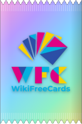
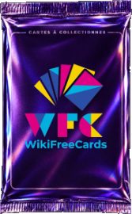
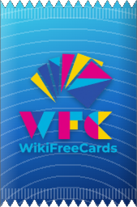
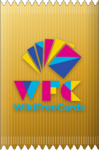
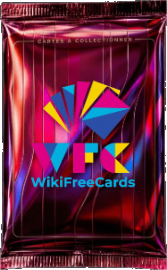
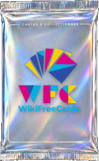
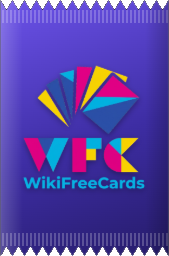
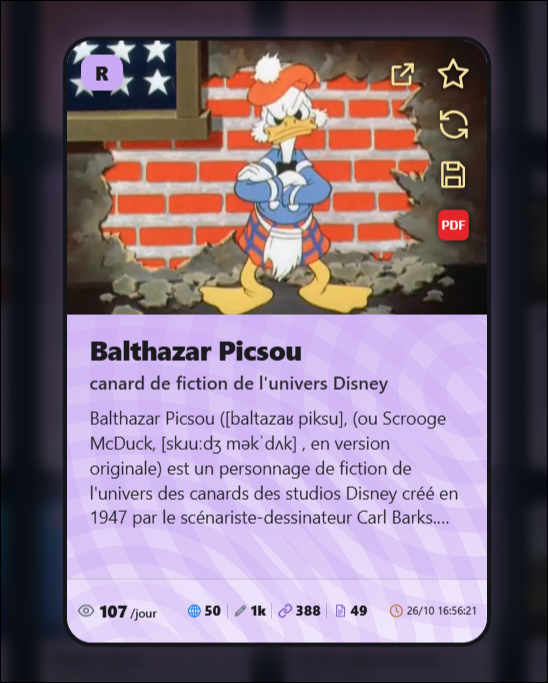

Wikipédia, en cartes à collectionner
WikiFreeCards transforme les articles de Wikipédia en cartes à collectionner. Ouvrez des paquets, rangez vos trouvailles, créez vos propres cartes et partagez votre collection si vous le souhaitez. Le tout à votre rythme, sur votre ordinateur.
- Gratuit et open source
- Fonctionne en local
- Sans compte ni mot de passe







Ouvrir un paquet, découvrir ses cartes
Chaque paquet contient des cartes tirées d'articles de Wikipédia : un personnage, une ville, un jeu, une espèce animale… À l'ouverture, vous gardez celles qui vous plaisent.
- Cliquez sur le paquetIl s'ouvre dans une courte animation.
- Découvrez vos cartesChacune affiche son rang, son illustration, son titre et le début de l'article.
- Faites le triLe bouton ✕ retire une carte que vous ne voulez pas garder. Elle est supprimée aussitôt.
- Ajoutez le resteUn clic sur Ajouter à la collection range les cartes conservées.
Ce qui rend WikiFreeCards différent
Le principe des cartes à collectionner tirées de Wikipédia existe ailleurs. WikiFreeCards le reprend avec une autre approche : plus calme, plus libre et beaucoup plus personnalisable.
Collectionner sans pression
Pas de course aux récompenses ni de stimulation permanente : votre collection évolue tranquillement, à votre rythme.
Un logiciel local
Le programme fonctionne sur votre ordinateur. Il ne dépend d'aucun serveur central ni d'aucun nom de domaine.
Un partage discret
Pour montrer votre collection, le partage passe par le réseau Tor, sans compte ni mot de passe. En savoir plus
Presque tout se personnalise
Thème, disposition, style et contenu des paquets, sons, musique, noms et apparence des rangs. Voir les réglages
Vos propres cartes
Créez des cartes à la main ou depuis une page web, et appliquez un full-art à vos favorites. Voir le créateur
Gratuit, sans achat intégré
Licence MIT, aucun achat, aucune monnaie virtuelle. Le code est fait pour être partagé et repris. La licence
Six rangs, fixés par la popularité
Le rang d'une carte dépend du nombre de vues quotidiennes de son article sur Wikipédia. Plus un article est consulté, plus sa carte est rare.
- LLégendaire
- URUltra rare
- SRSuper rare
- RRare
- PCPeu commun
- CCommun
Seuils, probabilités, noms, lettres, couleurs et reflets : chaque rang se règle dans la configuration.


Parcourir le site
Collectionner
Rechercher des articles, ranger sa collection, l'exporter et l'exposer dans des vitrines.
Aller à CollectionnerCréer des cartes
Créateur de cartes, full-art, choix et recadrage des illustrations.
Aller à Créer des cartesPersonnaliser
Vingt thèmes, vingt et un styles de paquets, rangs sur mesure et sauvegardes.
Aller à PersonnaliserLe projet
L'histoire du logiciel, sa philosophie, le partage via Tor et la licence.
Aller au projet